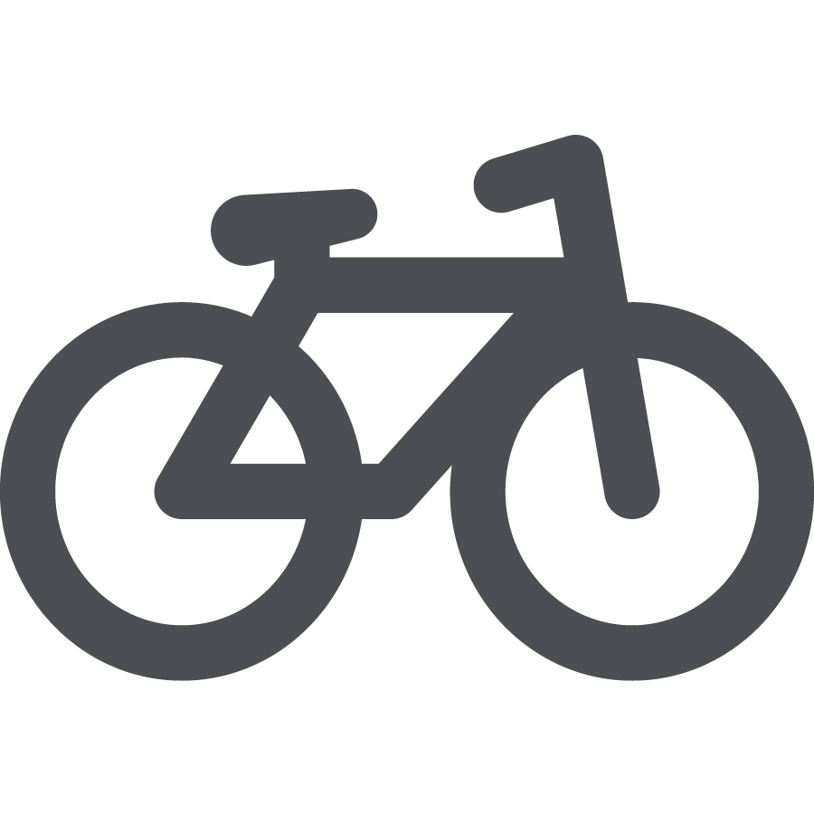

ALICE


Наши преимущества!
чистота
безопасность
комфорт

WI-FI
оборудованная кухня
прокат велосипедов
Отзывы наших клиентов:
Удобное месторасположение, на машине мин 6-10 от центра. Тихий двор, приятное обслуживани. Понравилось в принципе все! Отдохнули на славу, очень понравились апартаменты, чистые, светлые, нас встретила приятная девушка, рассказала где и что у них, где можно покушать, что увидеть. Остались довольны чистотой, все было аккуратно и ничего лишнего. Я думаю, что мы вернёмся сюда ещё!е
Маргарита, Россия
Уютно, спокойно, комфортно, обстановка со вкусом в номере. Прекрасная хозяйка. Отдыхали с ребенком 7 лет, в небольшой комнате не было тесно. Также были предложены дополнительные услуги. Хозяйка без проблем отвечала на все вопросы по городу. Рекомендую!
Герман, РоссияКомната очень чистая, уютная-есть все для отдыха индивидуального путешественника. Расположение недалеко от центра-много общественного транспорта идет к историческим местам. Вокруг много магазинов и кафе. У меня был ранний выезд-с этим тоже не было проблем. Спасибо огромнейшее. Очень уютное место в стиле "Алисы в стране чудес"-очень всем рекомендую
Елена, РоссияCozy and newly furnished flat. A little bit far from historical center but is only 5 mins walk to take a bus to the central. A shopping mall is nearby. You can cook in apartment and 3 supermarkets are around the block. Svetlana is very nice and helpful. We have 3 big luggage and is hard to call a taxi, she came to pick us up at train station and drove us back when we left. Highly recommend
James, Китай
Все понравилось, все новое, чистое. Расположение отличное, от центра на машине минут 5-10. Собственная парковка во дворе, за шлагбаумом. Есть холодильник, плитка и свч в комнате, соответствующая посуда прилагается. Приветливая хозяйка. Лучшее соотношение цены/качества
Елизавета, Россия
Номера уютные, оформлены в стиле "Алисы в стране чудес". Есть микроволновка, холодильник, чайник, тостер, электрическая плита, посуда. Смело можно готовить самим. В одном номере может поместиться до 4 человек: есть двуспальная кровать и раскладной диван. В одном из номеров есть балкон. Также в номере были полотенца.
Антон, Россия
Парковка бесплатная на охраняемой придомовой стоянке. Все необходимое есть в номере, кроме газовой или электроплиты. Удобное расположение от всех достоприиечательностей г.Владимир. Нет рядом какого-либо кафе, но есть у дома "Магнит". ОЧЕНЬ ЧИСТЫЙ и уютный номер. Быстрый интернет.
Людмила, Россия
Все есть- стиральная машинка, чайник, холодильник, посуда. Фен можно попросить. Светлана очень приветлива и радушна. Въехать и выехать нам нужно было не по графику) и никаких проблем. Расположение хорошее, я выбирала спец. в этом месте, тк весь транспорт проходит в сторону города через "1000 мелочей". Есть информационный стенд, который пригодится туристам и wi-fi. В душевой есть шампунь, мыло и губочка. Есть куда повесить одежду и вешалки и штанга. В целом, хорошо. Спасибо
Евгений, Россия
Останавливались на две ночи, в номере 25м. Если на машине - хороший вариант, общественным транспортом не пользовались, но недалеко есть остановка автобусов до центра. Идеальная чистота, все новое, в очень хорошем состоянии, Для готовки- индукционная одноконфорочная плитка, микроволновая печь, чайник, тостер,небольшой холодильник, вся необходимая посуда: чашки, бокалы, тарелки (обычные и глубокие), столовые приборы.
Виталий, Россия
Идеальная чистота и отличный стиль интерьера. Всё новое, подобрано из Икеи со вкусом. Дополнено душевными деталями - картины с видами Владимира, графикой. Есть балкон с барными стульями,можно уютно пить чай.Окна выходили во двор. Порадовали даже белые стены и идеальная чистота душевой кабины. Удобная мини-кухня! И конечно, радущный и ариветливый персонал! Все рассказали, обьяснили.
Мария, Россия